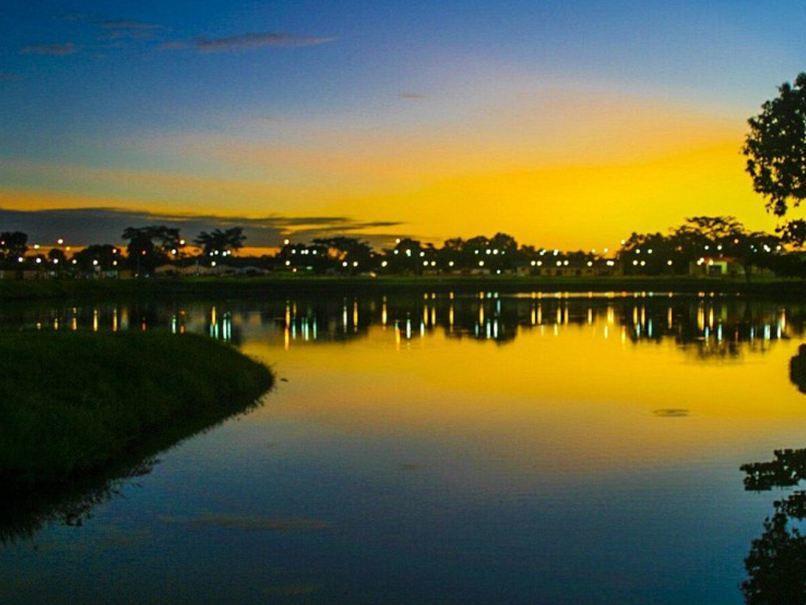

O Piauí é um estado brasileiro localizado na Região Nordeste que tem Teresina como sua capital, sendo esta a única capital nordestina que não fica no litoral. Geograficamente, o estado faz fronteira com o Maranhão, Ceará, Pernambuco, Bahia e Tocantins, possuindo a menor faixa litorânea do país com cerca de sessenta e seis quilômetros de extensão. Apesar do litoral curto, a região abriga o Delta do Parnaíba, que é o único delta das Américas em mar aberto. Historicamente ocupado pela pecuária, o território hoje se destaca na agricultura e no turismo, impulsionado pelo Parque Nacional da Serra da Capivara, um dos sítios arqueológicos mais importantes do mundo. Culturalmente, sua identidade é fortemente ligada à produção da cajuína e o nome do estado origina-se da língua tupi, significando rio dos piaus, uma espécie de peixe pintado da região. naturais. A norte encontra-se Olinda, uma cidade colonial situada entre uma vegetação exuberante.

Voltar